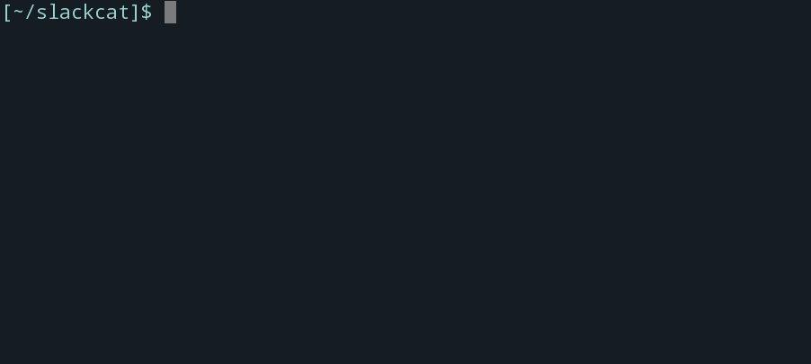

Pipe command output and upload files to Slack from your terminal!
 Scroll DownGet Started
• Download the latest build for your platform:
Linux:
wget https://github.com/vektorlab/slackcat/releases/download/v1.4/slackcat-1.4-linux-amd64 -O slackcat sudo mv slackcat /usr/local/bin/ sudo chmod +x /usr/local/bin/slackcat
OSX:
brew install slackcat
OR
curl -sLo slackcat https://github.com/vektorlab/slackcat/releases/download/v1.4/slackcat-1.4-darwin-amd64 sudo mv slackcat /usr/local/bin/ sudo chmod +x /usr/local/bin/slackcat
• Use the "Add to Slack" button on this page, or create a Slack token request interactively with:
slackcat --configure
Connect
Github
Have a suggestion or feature request? Feel free to submit a Github issue here